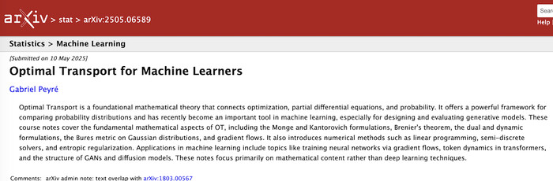
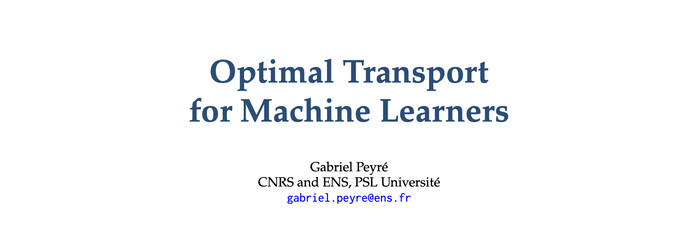
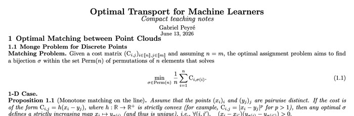

The Book
The manuscript develops optimal transport from finite assignments to Monge and Kantorovich formulations, Sinkhorn algorithms, generalized distances, gradient flows, and transportation-based generative models.

External
arXiv version
Canonical public version of the manuscript.

Local
Book PDF
PDF built from the LaTeX sources shipped in this repository.

Teaching
Compact handout
A shortened teaching version preserving the core mathematics.
How to cite
Cite the book
Gabriel Peyré. Optimal Transport for Machine Learners. arXiv:2505.06589 [stat.ML], submitted May 10, 2025; cross-listed in cs.AI and math.OC. DOI: 10.48550/arXiv.2505.06589.
Interactive Book
The web version follows the manuscript and places interactive panels beside the mathematical figures, so the reading flow stays centered on the book.
Figure Notebooks
The figure gallery is a searchable database: filter by concept or book section, inspect thumbnails, open notebooks on GitHub, and launch them in Colab.
Teaching Notebooks
Self-contained notebooks for classroom use and quick experimentation. Each can be opened in GitHub or launched directly in Colab.


Course Slides
Four slide decks provide a lecture-oriented route through the computational OT material.
Further Resources
Books, long reviews, surveys, and software are kept on a dedicated page so the homepage stays compact.